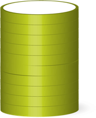

北京市统计局
国家统计局北京调查总队
我市文化创意产业总量规模快速扩大，
已成为城市经济发展的重要引擎
2014年 2012年 2010年 2008年 2006年 2826.3亿元 2205.2亿元 1697.7亿元 1346.4亿元 823.2亿元
全市文化创意产业实现增加值由2006年 的823.2亿元，增长到2014年的2826.3亿元
2006年文化创意产业从业人员88.1万人，2014年达到191.6万人，比2006年增长1.2倍。
5.5万个
14.6万个

 2008年
2013年
2008年
2013年
0.35万亿 0.74万亿 1.40万亿  2006年 2010年 2014年
文化创意九大领域包括：文化艺术、新闻出版、广播电视电影、软件网络及计算机服务、 广告会展、艺术品交易、设计服务、旅游休闲娱乐、其他辅助服务。
领跑九大领域
发展较快
16% 中关村 6% 北京市
中关村文化创意产业企业增速明显高于全市文化创意产业企业平均增速
相关行业发展
2014年全市城镇居民家庭人均文化娱乐用品和服务支出合计为2238元， 比2008年增长42.2%，其中文化娱乐服务占比超七成。
29.3% 70.7% 文化娱乐服务 文化娱乐用品
2014年全市电影票房收入22.8亿元
同比增长22.7%
2014年全市A级及主要旅游景区累计
接待游客2.9亿人次，同比增长7.3%
2014年北京地区主要艺术表演场
所艺术演出1.6万场，同比增长1%

2014年，全市20个文化创意产业功能区企业实现收入8158.8亿元，同比增长13.1%，占全市文化创意产业收入比重为69.1%，集聚效果进一步显现。
注：图可点击交互
(亿元)
2014年，我市规模以上文化创意产业非公及混合所有制经济法人单位实现收入9103.7亿元， 比上年增长11.7%，高于文化创意产业收入增速2.2个百分点， 占文化创意产业收入的比重达到82.5%。
注：图可点击交互
注：地图可缩放，饼图可点击交互
使用空格键或箭头键导航